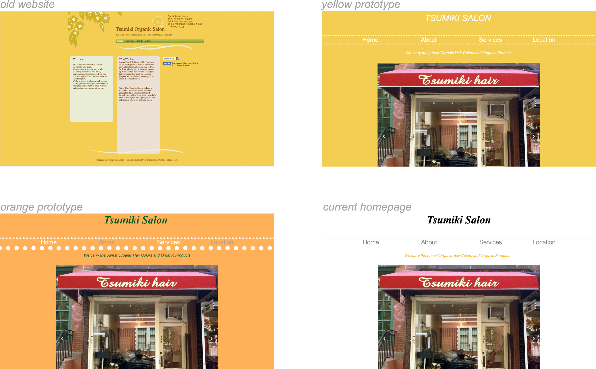

Tools used : Sketch | HTML & CSS | Adobe Photoshop | Adobe Illustrator | JS
Re-design a modern, user-friendly site for customers to re-discover the services offered by Tsumiki's Salon.
Tsumiki's original website looked abandoned and outdated. Prices, treatments, worker info, etc were all not kept up to date. The salon's location attracts heavy foot traffic, yet unfortunately the storefront is worn and easy to miss. Adding a dated website and no option for mobile was dire.
Built a complete brand identity package that includes : colour schemes, typescale, brand illustrations, and integrated this into a simple and easy site. Though Snacky presents itself as low key and unassuming, this shouldn't turn away customers from discovering the place. I kept the site welcoming yet true to the restaurant's discreet nature.
My initial step was to create a straightforward web flow format to serve as a base to design the website around. When developing wireframes, I started off by firstly expanding the elements of their old website. By doing this I could create a better sense of space.
After sketching out wireframe options, I moved into developing colours and mood. Initial trials centered around the heavy use of yellows and orange. These colours were referenced from the salon's old site, and drawn from the salon's self description of representing all things "happy and organic". However, when presented to a focus group, we soon realized the yellow did not feel fresh, the colour overwhelmed the page, giving the site an aged feel. White was then chosen as a background, and colours that complimented yellow were used. The use of white immediately created a crisp look, giving the page a professional appearance.
The header and navigation bar went through a few style trials. The ending result was the most professional. Black hues present a tone of seriousness. The navigation bar is decorated with miniature dotted lines, to maintain a sense of lightness and charm.
The moving banner feature the Japanese greeting of "Welcome". This cultural touch adds a charming element to the page. Tsumiki is Japanese owned and I wished to include a sweet reference to that. The choice of a moving banner was to imitate a welcoming waving gesture.

Images were photoshopped to introduce the salon at its most perfect. Warm colors emote an inviting atmosphere.

The illustrations of the shopgirl were created with the desire of attracting younger clientele. Tsumiki's clientele mainly consists of loyal customers around their late 30s/40s/50s. The girl is designed to look youthful yet mature. This is achieved by fashioning her in an elegant dress. Yellow and a shorter cut ushers in an air of youthfulness, while a mock neck maintains an attitude of elegance. This balanced design prevents older customers from feeling alienated. While it also leaves them desiring for her youth. A poll was taken, and one can see that voters overwhelmingly preferred the lady in yellow. The second image depicts a fantastic makeover, giving visitors a taste of the beauty that will come after a visit. The images are turned into moving animations, as they help create a livelier impression of the shop. The illustrations add new amusement into the salon's ethos while accentuating the store's natural charm.
A footer box is used to create a sense of landing for the illustration. It gifts the page with a sense of stability, as it provides foundation to an otherwise floating image. The image conveniently brings one back to the top of the homepage.
Throughout the design process I constantly sought to seek balance between professionalism and small shop charm. The end product is professional, clean, and charming. People prefer to invest more in self care when it is provided in a clean, calming environment. The website immediately promises this kind of care, with a design that takes all this into account.